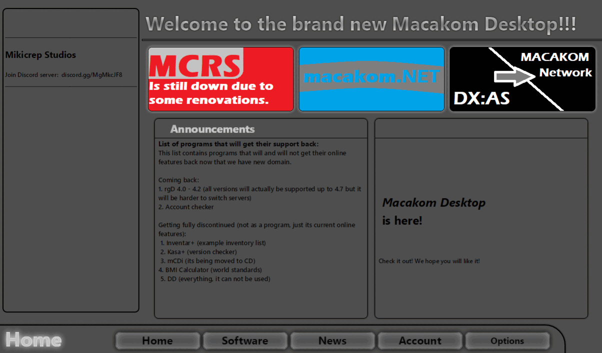

Unexpected API downtime!
API Downtime
Something has went wrong with the vps that hosts Macakom API and other services. I do not know yet what is wrong but i will try to fix it as soon as possible. Services that have been affected: Macakom API site, leaderboars, mikicrep studios account system, and some experimental account things.
Macakom API
I will do it "the rigt way" this time. I already had something that i dont really think can be called an api, it was and is just a website like this one (as.macakom.net). But the problem with that was you can only pull data from it, not give it any. That is fine for 90% of functions in lets say Macakom Desktop but you could not interact with your account. You have to message me or email me about what you want to change. I hope that will come to an end once i figure this all out with hosting and more importantly securing it all. I am planning on making it public and letting other people to use my login sistem for auth for whatever reason. Also a really cool thing is that now i can make a web page where you can view your account so a program will not be necessary, i will keep you up to date.
New site again!
I redesigned this poor site once again because i felt like doing it. This is 3rd major version so far. First there was html but it was made in publisher so that doesnt really count. 2.0 was a JavaScript app actually that looked and behaved very good on my pc and in IDE but not in a web browser so that didnt last long. And finally we have this version that i started and finished making on 3rd of June 2024. (Most of things i stole from W3Schools but i figured out how to arrange things by myself so thats something) I hope this change will be the las one in a while now because this one looks kinda nice and its easy to maintain (unlike ones made in Publisher).
Get Macakom Desktop!

Macakom Desktop is a version of Macakom.net website but as a computer software. Compared to the website Desktop contains much more information and content than Macakom Website. This is just a preview version because I am still working od this thing. It allows you to check for updates in options so you do not have to come here and see if there are any updates. Macakom Desktop will be full of features. Such as: Downloading other programs or games inside of it, checking macakom news and logging into and viewing your account. This piece of software is being actively developed and updated so be sure to check for updates.